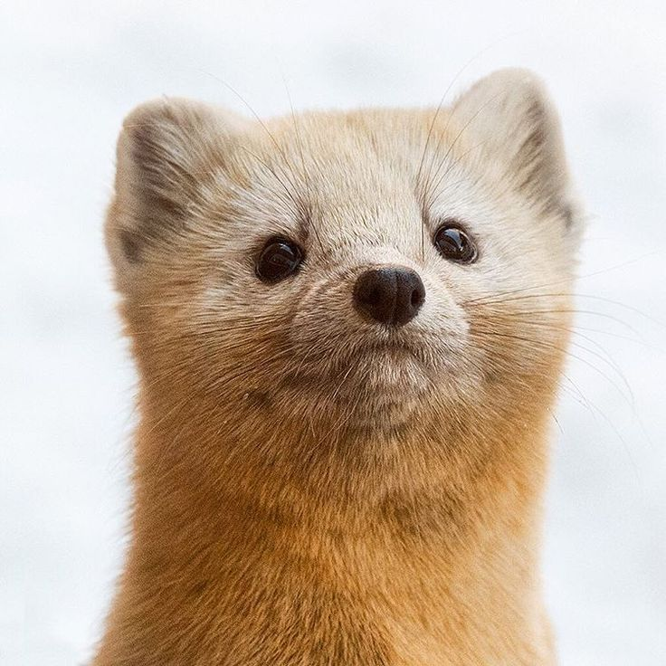
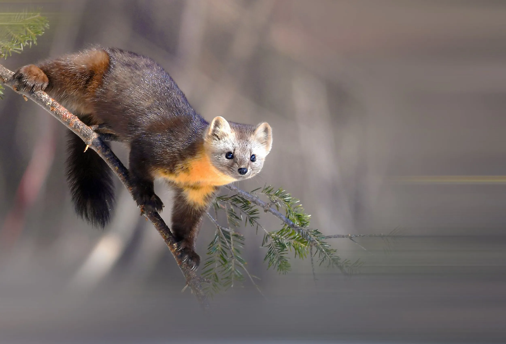

Sable (Martes zibellina)
Sables are often loved for their unique charm, with their soft, glossy fur and graceful movements making them stand out among forest animals. Many people enjoy drawings of them, and sometimes those drawings become little keepsakes—reminders of why the sable is so special in the first place.

Did you know?
- They favor dense conifer and mixed woodlands where cover is plentiful.
- Diet includes small mammals, birds’ eggs, insects, and seasonal berries.
- They’re crepuscular—most active at dawn and dusk.

Coat Detail
Dense, silky fur helps with insulation in cold climates.

Forest Tracker
Narrow paw prints with a bounding pattern in snow.

Seasonal Forager
Will supplement with berries and fruit when available.